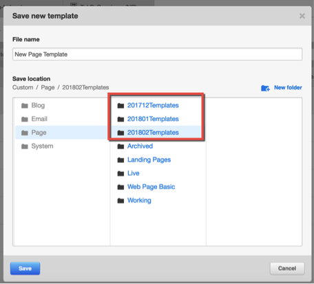
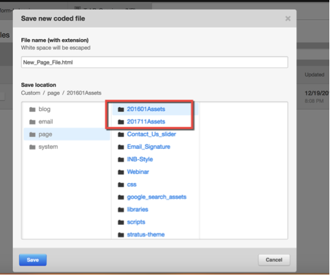
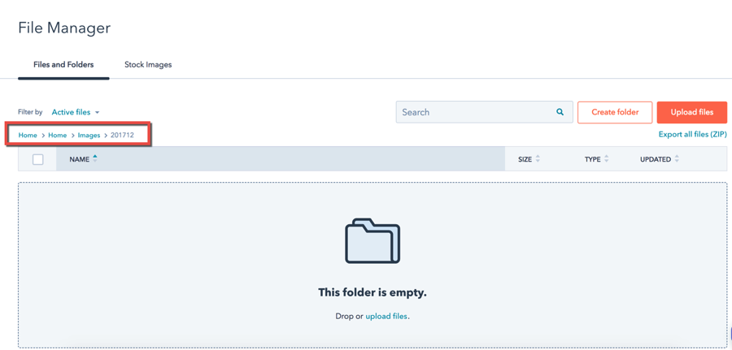

HubSpot Docs
Organizing Design Manager and File Manager
Problem/Situation
At the moment our templates, modules, code files and other static assets are arranged in an unstructured way. There is apparently no organization in place! Every time a new page design request is received, a template is being started from scratch (although leveraging the existing modules and code where possible). At the end of day we have a hard time figuring out what template is being used and which one is not used any more.
The idea is to classify all templates, code files and static assets in an intuitive way.
Key Guidelines
- Avoid special characters where possible.
- Keep the names and labels concise. They shouldn’t be more than 25 characters.
- A record retention strategy needs to be in place, we will talk about it in a bit.
- Use relevant date information in names and labels where possible, e.g. a folder that contains all the template built in January 2017 should have following name i.e. 201701Templates. Using reverse order date will arrange the list in chronological order (See Figure 1, Figure2).
- Use short forms and abbreviations where possible for example a thank you page template can be called Template_TY.
- The time unit for classifying stuff is a month e.g March 2018.
Naming Folders
Templates and Coded files All the templates, code files or static assets should be organized in a folder, which has a name that contains the date information in reverse order. Refer to point 4 in Key Guidelines section. See Figure 1, Figure 2.
File Manager
Based on our working experience, it best to organize files based on the page or resource to which it belongs. For example all images for the home page should be organized in following manner: Home > Image > 201712 (For all images used in home page in 201712). See Figure 3.

Figure 1

Figure 2

Figure 3
Naming Templates
Naming a template is pretty straightforward. Prepend the page name with the year and month, for example 201801 and a “Template” and append it with a “_Live” in case the template is used for a live page. This will ensure that all live templates can be searched using the Live flag. Some examples: 1. A template for a live blog will be called 201812_Template_Blog_Live. 2. A template for a development request demo page will be called 20181112_Template_RequestDemo.
Whenever a new template is live make sure you remove "_Live" from any previous live template. At a given time only one template can have "_Live" flag in its name.
If a template has been revised more than once in a month, put day as well in the first part of the template name e.g. 20171230_Template_FAQs, 20171219_Template_FAQs.
Naming Coded Files
All coded files should have a lower case name. For example CSS and Javascript files specific to the Blog can be called blog.css and blog.js respectively. The idea is to use lower case name for all files, which the end user should not play around with, such as the coded files.
Naming Modules
Modules cannot be classified into templates. There are two types of modules though i.e Custom and Global.
Custom Modules
The naming convention for a custom module should be intuitive and should reflect the feature it is developed for and the reverse timestamp. For example if a module is build for a carousel in Feb 2018, it should be called 201802_Custom_Carousel. Using reverse timestamp will put it in a chronological order.
Global Modules
The naming convention for global modules will remain similar to custom modules. Just replace Custom with Global e.g. a global module for header would be called 201802_Global_Header.
Naming Module Fields
A module field should be named in following order: Purpose Type e.g. if a text field is used for displaying headline in a hero area module, it should be called Headline Text. Let HubSpot engine take care of internal naming.
Naming Pages
Naming pages is pretty straightforward e.g. FAQs, Terms and Conditions. Make sure any previous version of the page is archived when a new page goes live.
The internal name and title of the page should be identical.
Mockups and Images
Mockups
Providing a mockup for every screen resolution is not possible so we have stream lined the process.
A ~375px mockup is needed for Phones. A ~960px is needed for Tablets Landscape. A ~ 1440px is need for Medium Resolution Desktops. (Optional) A ~1920px is needed for High Resolution Desktops.
Images and Logos
Different screen densities require different size images e.g. 1x, 2x and 3x. It is preferable to provide all sizes of images. We will use Retina.js to dynamically display images based on screen densities.
This approach won’t work on emails and we expect you to give us 2x images for emails.
Quality Assurance
Make sure the pages are tested properly before delivering.
Automated Testing
We will use Selenium for testing form submissions, links and interfaces. Please note that selenium testing will be rolled out in phases.
Form Submission
Form validations, post form submissions should be validated using Selenium.
Anchors and links
We will use selenium or any other platform for testing all links on the pages. The target is that all links land on the correct page and there are no 404s.
User Interface
All of the user interface cannot be tested automatically; only the area above the fold can be validated using image comparison tools.
Manual Testing
The user interface needs to be tested on all major browsers and devices as per this testcase suite.
The parts that are compared using automated tools, needs to be validated as well.
The automated testing can have potential errors initially, its better to test all things manually as well just to ensure automated testing is up to mark.
Including CSS, JavaScript files and Images (Not for Emails)
CSS and JavaScript files
- All JavaScript files will only be included in the footer.
- All CSS files will only be included in the header.
- No inline CSS and JavaScript is allowed. This will keep the code cleaner and manageable.
- Any third party CSS or JavaScript library will be added to a to a file like libraries.js or libraries.css. Separately including each library slows down the page load time and causes additional render blocking.
- Where possible, create one respective file for all custom CSS and Javascript code i.e. styles.css and scripts.js respectively.
- All custom Javascript code should be wrapped inside jquery document.ready function.
Images
- We will have three types of images i.e. 1x, 2x and 3x. Retina.js will be used to dynamically select the appropriate type for a screen.
- Use sprites and font icons whenever possible.
Page Load Time
There is not much we can do on server side for improving page load times but here is what we should do on the client side:
- Add Javascript files in footer only and CSS files in header only.
- Any third party CSS or JavaScript library will be added to a to a file like libraries.js or libraries.css. Separately including each library slows down the page load time and causes additional render blocking.
- Use font icons where possible.
- Use sprites and low res images.
- Make sure only needed CSS and Javascript is loaded on the page.
- Make sure to load files on the page from CDNs as they have better caching mechanism. This will also ensure files are loaded from different domains in practice.
Developing Emails
Background
There are two ways to create an email template in HubSpot using Design Manager or using Coded files. From a compatibility perspective we the latter approach is preferred, as it gives us more control over the template code. If due to some reasons customer prefers to build template using Design Manager, they should compromise on potential compatibility problems.
Setting Expectations
- The email templates we develop are compatible with 33+ desktop and mobile email clients.
- We use HubSpot built in Litmus testing for validating email’s design in email clients.
- We do real device testing for only important email clients.
- Gmail mobile email client is known to have problems when displaying emails. We can develop an email template that may display reasonably there but it will have problems on other email clients. We normally shrink emails there.
Development Best Practices
- Each section in the email design should be translated as a module in HubSpot email template.
More to be added later…
Developing Modules
The purpose of a HubSpot module is to promote reusability. It should be a preference to use modules whenever possible.
Staging Environment
Website and Landing Pages All the website and landing pages have to follow the staging workflow. This means whenever a change is requested on a page which is already live, make sure a staging equivalent is created at the top of it. This staging version will be used for any new development work and client demonstration.
Blogs
Staging environment doesn’t work for HubSpot Blogs. A work around is to create a new HubSpot Blog and make it invisible to search engines by adding following meta-tag in the content settings.
Also make sure you select a demo domain for all staging blogs.
Archiving Strategy
Can we archive all unused templates, modules, coded files, images and assets?
Forms
We are assuming that the digital marketing team will manage the forms. If a change request also entails a form, the form to be used should be provided to the development team along with the requirements.